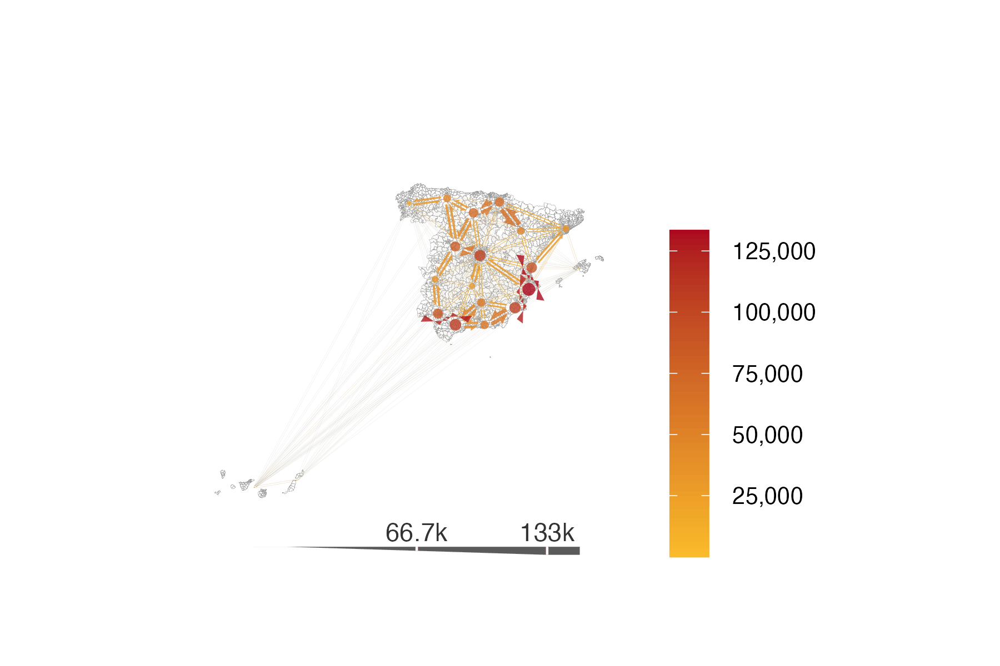
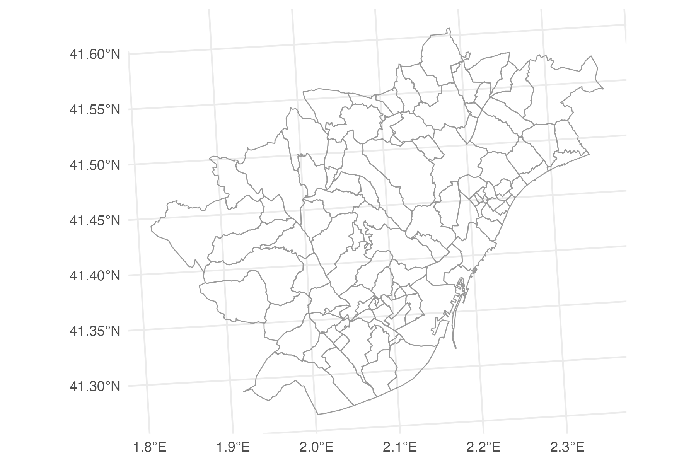
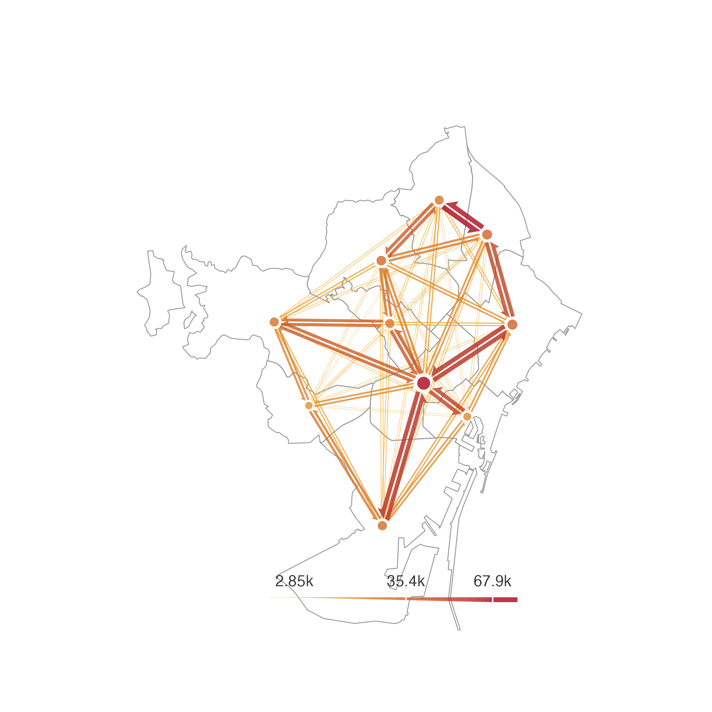
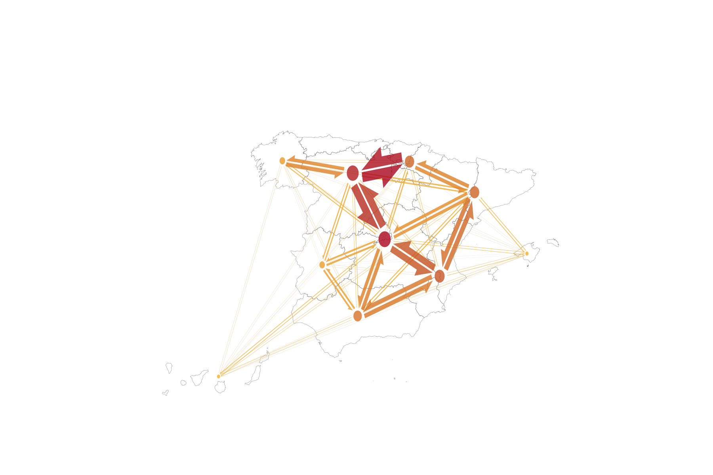
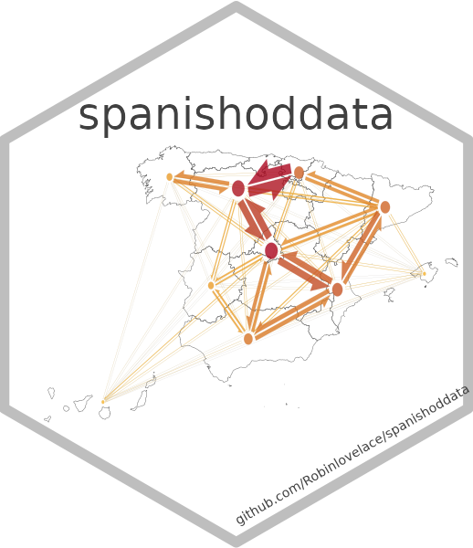

Making static flow maps
or how to re-create spanishoddata logo
Source:vignettes/flowmaps-static.qmd
This tutorial shows how to make static ‘flow maps’ with data from spanishoddata and the flowmapper (Mast 2024) data visualisation package. We cover two examples. First, we only use the origin-destination flows and district zones that you can get using the spanishoddata package. In the second more advanced example we also use mapSpain and hexSticker packages to re-create the spanishoddata logo. For both examples, make sure you first go though the initial setup steps. To make interactive flow maps, please see the interactive flow maps tutorial.
1 Setup
1.1 Set the data directory
Choose where spanishoddata should download (and convert) the data by setting the data directory following command:
spod_set_data_dir(data_dir = "~/spanish_od_data")The function above will also ensure that the directory is created and that you have sufficient permissions to write to it.
Setting data directory for advanced users
You can also set the data directory with an environment variable:
Sys.setenv(SPANISH_OD_DATA_DIR = "~/spanish_od_data")The package will create this directory if it does not exist on the first run of any function that downloads the data.
To permanently set the directory for all projects, you can specify the data directory globally by setting the SPANISH_OD_DATA_DIR environment variable, e.g. with the following command:
usethis::edit_r_environ()
# Then set the data directory globally, by typing this line in the file:SPANISH_OD_DATA_DIR = "~/spanish_od_data"You can also set the data directory locally, just for the current project. Set the ‘envar’ in the working directory by editing .Renviron file in the root of the project:
file.edit(".Renviron")2 Simple example - plot flows data as it is
2.1 Get data
2.1.1 Flows
Let us get the flows between districts for a typical working day 2021-04-07:
# Source: SQL [6 x 14]
# Database: DuckDB v1.0.0 [root@Darwin 23.6.0:R 4.4.1/:memory:]
date id_origin id_destination activity_origin activity_destination residence_province_in…¹ residence_province_n…² time_slot distance n_trips trips_total_length_km year month
<date> <fct> <fct> <fct> <fct> <fct> <fct> <int> <fct> <dbl> <dbl> <int> <int>
1 2021-04-07 01001_AM 01001_AM home other 01 Araba/Álava 0 005-010 10.5 68.9 2021 4
2 2021-04-07 01001_AM 01001_AM home other 01 Araba/Álava 0 010-050 12.6 127. 2021 4
3 2021-04-07 01001_AM 01001_AM home other 01 Araba/Álava 1 010-050 12.6 232. 2021 4
4 2021-04-07 01001_AM 01001_AM home other 01 Araba/Álava 2 005-010 10.8 102. 2021 4
5 2021-04-07 01001_AM 01001_AM home other 01 Araba/Álava 5 005-010 18.9 156. 2021 4
6 2021-04-07 01001_AM 01001_AM home other 01 Araba/Álava 6 010-050 10.8 119. 2021 4
# ℹ abbreviated names: ¹residence_province_ine_code, ²residence_province_name
# ℹ 1 more variable: day <int>2.1.2 Zones
We also get the district zones polygons to match the flows. We use version 1 for the polygons, because the selected date is in 2021, which corresponds to the v1 data (see the relevant codebook).
districts_v1 <- spod_get_zones("dist", ver = 1)
head(districts_v1)Simple feature collection with 6 features and 6 fields
Geometry type: MULTIPOLYGON
Dimension: XY
Bounding box: xmin: 289502.8 ymin: 4173922 xmax: 1010926 ymax: 4720817
Projected CRS: ETRS89 / UTM zone 30N (N-E)
# A tibble: 6 × 7
id census_districts municipalities_mitma municipalities district_names_in_v2 district_ids_in_v2 geom
<chr> <chr> <chr> <chr> <chr> <chr> <MULTIPOLYGON [m]>
1 2408910 2408910 24089 24089 León distrito 10 2408910 (((290940.1 4719080, 290…
2 22117_AM 2210201; 2210301; 2211501; 2211701; 2216401; 2218701; 2221401 22117_AM 22102; 22103; 22115; … Graus agregacion de… 22117_AM (((774184.4 4662153, 774…
3 2305009 2305009 23050 23050 Jaén distrito 09 2305009 (((429745 4179977, 42971…
4 07058_AM 0701901; 0702501; 0703401; 0705801; 0705802 07058_AM 07019; 07025; 07034; … Selva agregacion de… 07058_AM (((1000859 4415059, 1000…
5 2305006 2305006 23050 23050 Jaén distrito 06 2305006 (((429795.1 4180957, 429…
6 2305005 2305005 23050 23050 Jaén distrito 05 2305005 (((430022.7 4181101, 429…2.2 Aggregate data - count total flows
2.3 Reshape flows for visualization
The flowmapper package was developed to visualise origin-destination ‘flow’ data (Mast 2024). This package expects the data to be in the following format:
A data.frame with origin-destination pairs and the flow counts between them with the following columns:
o: The unique id of the origin noded: The unique id of the destination nodevalue: The intensity of flow between the origin and destination
Another data.frame with the node ids or names and their coorindates. The coordinate reference system should match whichever other data you are planning to use in the plot.
name: The unique id or name of the node, must match with o and d in the flows data.frame above;
x: The x coordinate of the node;
y: The y coordinate of the node;
2.3.1 Prepare the flows table
The previous code chunk created od_20210407_total with the column names expected by flowmapper.
head(od_20210407_total)# A tibble: 6 × 3
o d value
<fct> <fct> <dbl>
1 2408910 2408910 1889.
2 2408910 24154_AM 11.0
3 2408910 5029703 12.8
4 2408910 24181_AM 22.3
5 2408910 4802004 9.45
6 2408910 4718608 4.75 2.3.2 Prepare the nodes table with coordinates
We need the coordinates for each origin and destination. We can use the centroids of districts_v1 polygons for that.
districts_v1_coords <- districts_v1 |>
st_centroid() |>
st_coordinates() |>
as.data.frame() |>
mutate(name = districts_v1$id) |>
rename(x = X, y = Y)
head(districts_v1_coords) x y name
1 290380.7 4719394 2408910
2 774727.2 4674304 22117_AM
3 428315.4 4177662 2305009
4 1001283.0 4422732 07058_AM
5 427524.2 4180942 2305006
6 428302.1 4190937 23050052.4 Plot the flows
2.4.1 Plot the entire country
Now we have the data structure that match the flowmapper‘s expected data format we can plot a sample of the data (a plot containing all flows would be very ’busy’ and world resemble a haystack!). The k_node argument in the add_flowmap function can be used to reduce this business.
# create base ggplot with boundaries removing various visual clutter
base_plot_districts <- ggplot() +
geom_sf(data = districts_v1, fill=NA, col = "grey60", linewidth = 0.05)+
theme_classic(base_size = 20) +
labs(title = "",
subtitle = "", fill = "", caption = "") +
theme(
axis.line = element_blank(),
axis.text = element_blank(),
axis.ticks = element_blank(),
axis.title = element_blank(),
panel.background = element_rect(fill='transparent'),
plot.background = element_rect(fill='transparent', color=NA),
panel.grid.major = element_blank(),
panel.grid.minor = element_blank()
) +
guides(fill = "none")
# flows_by_ca_twoway_coords |> arrange(desc(flow_ab))
# add the flows
flows_plot_all_districts <- base_plot_districts |>
add_flowmap(
od = od_20210407_total,
nodes = districts_v1_coords,
node_radius_factor = 1,
edge_width_factor = 1,
arrow_point_angle = 35,
node_buffer_factor = 1.5,
outline_col = "grey80",
add_legend = "bottom",
legend_col = "gray20",
legend_gradient = TRUE,
k_node = 20 # play around with this parameter to aggregate nodes and flows
)
# customise colours for the fill
flows_plot_all_districts <- flows_plot_all_districts +
scale_fill_gradient(
low = "#FABB29",
high = "#AB061F",
labels = scales::comma_format() # Real value labels
)
flows_plot_all_districts
2.4.2 Zoom in to the city level
Let us filter the flows and zones data to just a specific functional urban area to take a closer look at the flows.
2.4.2.1 Filter the zones
Let us select all districts that correspond to Barcelona and a 10 km radius around it. Thanks to the district_names_in_v2 column in the zones data, we can easily select all the districts that correspond to Barcelona and then apply the spatial join on the to select some more districts around the polygons that correspond to Barcelona.
zones_barcelona <- districts_v1 |>
filter(grepl("Barcelona", district_names_in_v2, ignore.case = TRUE))
zones_barcelona_fua <- districts_v1[
st_buffer(zones_barcelona, dist = 10000)
,
]
zones_barcelona_fua_plot <- ggplot() +
geom_sf(data = zones_barcelona_fua, fill=NA, col = "grey60", linewidth = 0.3) +
theme_minimal()
zones_barcelona_fua_plot
We also prepare the nodes for the add_flowmap function:
zones_barcelona_fua_coords <- zones_barcelona_fua |>
st_centroid() |>
st_coordinates() |>
as.data.frame() |>
mutate(name = zones_barcelona_fua$id) |>
rename(x = X, y = Y)
head(zones_barcelona_fua_coords) x y name
1 930267.0 4607072 08180
2 914854.0 4604279 08054
3 926837.9 4597166 0801905
4 927995.1 4594372 0801904
5 930418.9 4599218 0801907
6 930702.3 4597116 08019062.4.2.2 Prepare the flows
Now we can use the zone ids from the zones_barcelona_fua data to select the flows that correspond to Barcelona and the 10 km radius around it.
2.4.2.3 Visualise the flows for Barcelona and surrounding areas
Now, we can create a new plot with this data. Once again, we need the k_node argument to tweak the aggregation of nodes and flows. Feel free to tweak it yourself and see how the results change.
# create base ggplot with boundaries removing various visual clutter
base_plot_barcelona <- ggplot() +
geom_sf(data = zones_barcelona_fua, fill=NA, col = "grey60", linewidth = 0.05)+
theme_classic(base_size = 20) +
labs(title = "",
subtitle = "", fill = "", caption = "") +
theme(
axis.line = element_blank(),
axis.text = element_blank(),
axis.ticks = element_blank(),
axis.title = element_blank(),
panel.background = element_rect(fill='transparent'),
plot.background = element_rect(fill='transparent', color=NA),
panel.grid.major = element_blank(),
panel.grid.minor = element_blank()
) +
guides(fill = 'none')
# flows_by_ca_twoway_coords |> arrange(desc(flow_ab))
# add the flows
flows_plot_barcelona <- base_plot_barcelona |>
add_flowmap(
od = od_20210407_total_barcelona,
nodes = zones_barcelona_fua_coords,
node_radius_factor = 1,
edge_width_factor = 0.6,
arrow_point_angle = 45,
node_buffer_factor = 1.5,
outline_col = "grey80",
add_legend = "bottom",
legend_col = "gray20",
legend_gradient = TRUE,
k_node = 30 # play around with this parameter to aggregate nodes and flows
)
# customise colours for the fill
flows_plot_barcelona <- flows_plot_barcelona +
scale_fill_gradient(
low = "#FABB29",
high = "#AB061F",
labels = scales::comma_format() # Real value labels
)
flows_plot_barcelona
3 Advanced example - aggregate flows for {spanishoddata} logo
For the advanced example we will need two additional packages: mapSpain (Hernangómez 2024) and hexSticker (R-hexSticker?).
# two new packages
library(mapSpain)
library(hexSticker)
# load these too, if you have not already
library(spanishoddata)
library(flowmapper)
library(tidyverse)
library(sf)3.1 Get data
3.1.1 Flows
Just like in the simple example above, we will need the flows to visualise.
Let us get the origin-destination flows between districts for a typical working day 2022-04-06:
od <- spod_get("od", zones = "distr", dates = "2022-04-06")Also get the spatial data for the zones. We are using the version 2 of zones, because the data we got was for 2022 and onwards, which corresponds to the v2 data (see the relevant codebook).
districts <- spod_get_zones("distr", ver = 2)3.1.2 Map of Spain
Ultimately, we would like to plot the flows on a map of Spain, so we will aggregate the flows for visualisation to avoid visual clutter. We therefore also need a nice map of Spain, which we will get using mapSpain (Hernangómez 2024) package:
spain_for_vis <- esp_get_ccaa()
spain_for_join <- esp_get_ccaa(moveCAN = FALSE)We are getting two sets of boundaries. First one is with Canary Islands moved closer to the mainland Spain, for nicer visualisation. Second one is with the original location of the islands, so that we can spatially join them to the zones districts data we got from spanishoddata.
3.2 Flows aggregation
3.2.1 Aggregate raw origin destination data by original ids
Let us count the total number of trips made between all locations on our selected day of 2022-04-06:
# A tibble: 402,711 × 3
id_origin id_destination n_trips
<fct> <fct> <dbl>
1 31260_AM 01017_AM 7.15
2 31260_AM 01043 13.7
3 31260_AM 0105902 16.1
4 31260_AM 2512005 12.2
5 31260_AM 26002_AM 8
6 31260_AM 26026_AM 4
7 31260_AM 26036 38.3
8 31260_AM 26061_AM 10.6
9 31260_AM 26084 5.5
10 31260_AM 2608902 109.
# ℹ 402,701 more rows
# ℹ Use `print(n = ...)` to see more rows
3.2.2 Match ids of districts with autonomous communities
Now we need to do a spatial join between districts and spain_for_join to find out which districts fall within which autonomous community. We use spain_for_join. If we used spain_for_vis, the districts in the Canary Islands would not match with the boundaries of the islands.
district_centroids <- districts |>
st_centroid() |>
st_transform(crs = st_crs(spain_for_join))
ca_distr <- district_centroids |>
st_join(spain_for_join) |>
st_drop_geometry() |>
filter(!is.na(ccaa.shortname.en)) |>
select(id, ca_name = ccaa.shortname.en)
ca_distr# A tibble: 3,784 × 2
id ca_name
<chr> <chr>
1 01001 Basque Country
2 01002 Basque Country
3 01004_AM Basque Country
4 01009_AM Basque Country
5 01010 Basque Country
6 01017_AM Basque Country
7 01028_AM Basque Country
8 01036 Basque Country
9 01043 Basque Country
10 01047_AM Basque Country
# ℹ 3,774 more rows
# ℹ Use `print(n = ...)` to see more rowsThis way we get a table with districts ids and their corresponding autonomous community names.
3.2.3 Count flows between pairs of autonomous communities
We can now add these ids to the total flows by districts id pairs and calculate total flows between autonomous communities:
flows_by_ca <- flows_by_district |>
left_join(ca_distr |>
rename(id_orig = ca_name),
by = c("id_origin" = "id")
) |>
left_join(ca_distr |>
rename(id_dest = ca_name),
by = c("id_destination" = "id")
) |>
group_by(id_orig, id_dest) |>
summarise(n_trips = sum(n_trips, na.rm = TRUE),
.groups = "drop") |>
rename(o = id_orig, d = id_dest, value = n_trips)
flows_by_ca# A tibble: 358 × 3
o d value
<chr> <chr> <dbl>
1 Andalusia Andalusia 23681858.
2 Andalusia Aragon 643.
3 Andalusia Asturias 373.
4 Andalusia Balearic Islands 931.
5 Andalusia Basque Country 769.
6 Andalusia Canary Islands 1899.
7 Andalusia Cantabria 153.
8 Andalusia Castile and León 3114.
9 Andalusia Castile-La Mancha 13655.
10 Andalusia Catalonia 5453.
# ℹ 348 more rows
# ℹ Use `print(n = ...)` to see more rows3.3 Reshape flows for visualization
We are going to use the flowmapper (Mast 2024) package to plot the flows. This package expects the data to be in the following format:
A data.frame with origin-destination pairs and the flow counts between them with the following columns:
o: The unique id of the origin noded: The unique id of the destination nodevalue: The intensity of flow between the origin and destination
Another data.frame with the node ids or names and their coorindates. The coordinate reference system should match whichever other data you are planning to use in the plot.
name: The unique id or name of the node, must match with o and d in the flows data.frame above;
x: The x coordinate of the node;
y: The y coordinate of the node;
3.3.1 Prepare the flows table
The data we have right now in flows_by_ca already has the correct format expected by flowmapper.
head(flows_by_ca)# A tibble: 6 × 3
o d value
<chr> <chr> <dbl>
1 Andalusia Andalusia 23681858.
2 Andalusia Aragon 643.
3 Andalusia Asturias 373.
4 Andalusia Balearic Islands 931.
5 Andalusia Basque Country 769.
6 Andalusia Canary Islands 1899.3.3.2 Prepare the nodes table with coordinates
We need the coordinates for each origin and destination. We can use the centroids of districts_v1 polygons for that.
spain_for_vis_coords <- spain_for_vis |>
st_centroid() |>
st_coordinates() |>
as.data.frame() |>
mutate(name = spain_for_vis$ccaa.shortname.en) |>
rename(x = X, y = Y)
head(spain_for_vis_coords) x y name
1 -4.5777846 37.46782 Andalusia
2 -0.6648791 41.51335 Aragon
3 -5.9936312 43.29377 Asturias
4 2.9065933 39.57481 Balearic Islands
5 -10.7324736 35.36091 Canary Islands
6 -4.0300438 43.19772 Cantabria3.4 Plot the flows
Now we have the data structure that match the flowmapper’s expected data format:
# create base ggplot with boundaries removing any extra elements
base_plot <- ggplot() +
geom_sf(data = spain_for_vis, fill=NA, col = "grey30", linewidth = 0.05)+
theme_classic(base_size = 20) +
labs(title = "",
subtitle = "", fill = "", caption = "") +
theme(
axis.line = element_blank(),
axis.text = element_blank(),
axis.ticks = element_blank(),
axis.title = element_blank(),
panel.background = element_rect(fill='transparent'),
plot.background = element_rect(fill='transparent', color=NA),
panel.grid.major = element_blank(),
panel.grid.minor = element_blank()
) +
guides(fill = 'none')
# flows_by_ca_twoway_coords |> arrange(desc(flow_ab))
# add the flows
flows_plot <- base_plot|>
add_flowmap(
od = flows_by_ca,
nodes = spain_for_vis_coords,
node_radius_factor = 1,
edge_width_factor = 1,
arrow_point_angle = 35,
node_buffer_factor = 1.5,
outline_col = "grey80",
k_node = 10 # play around with this parameter to aggregate nodes and flows
)
# customise colours and remove legend, as we need a clean image for the logo
flows_plot <- flows_plot +
guides(fill="none") +
scale_fill_gradient(low="#FABB29", high = "#AB061F")
flows_plot
The image may look a bit bleak, but when we put it on a sticker, it will look great.
3.5 Make the sticker
We make the sticker using the hexSticker (Yu 2020) package.
sticker(flows_plot,
# package name
package= "spanishoddata",
p_size=4, p_y = 1.6,
p_color = "gray25", p_family="Roboto",
# ggplot image size and position
s_x=1.02, s_y=1.19, s_width=2.6, s_height=2.72,
# white hex
h_fill="#ffffff", h_color="grey", h_size=1.3,
# url
url = "github.com/rOpenSpain/spanishoddata",
u_color= "gray25",
u_family = "Roboto",
u_size = 1.2,
# save output name and resolution
filename="./man/figures/logo.png", dpi=300 #
)